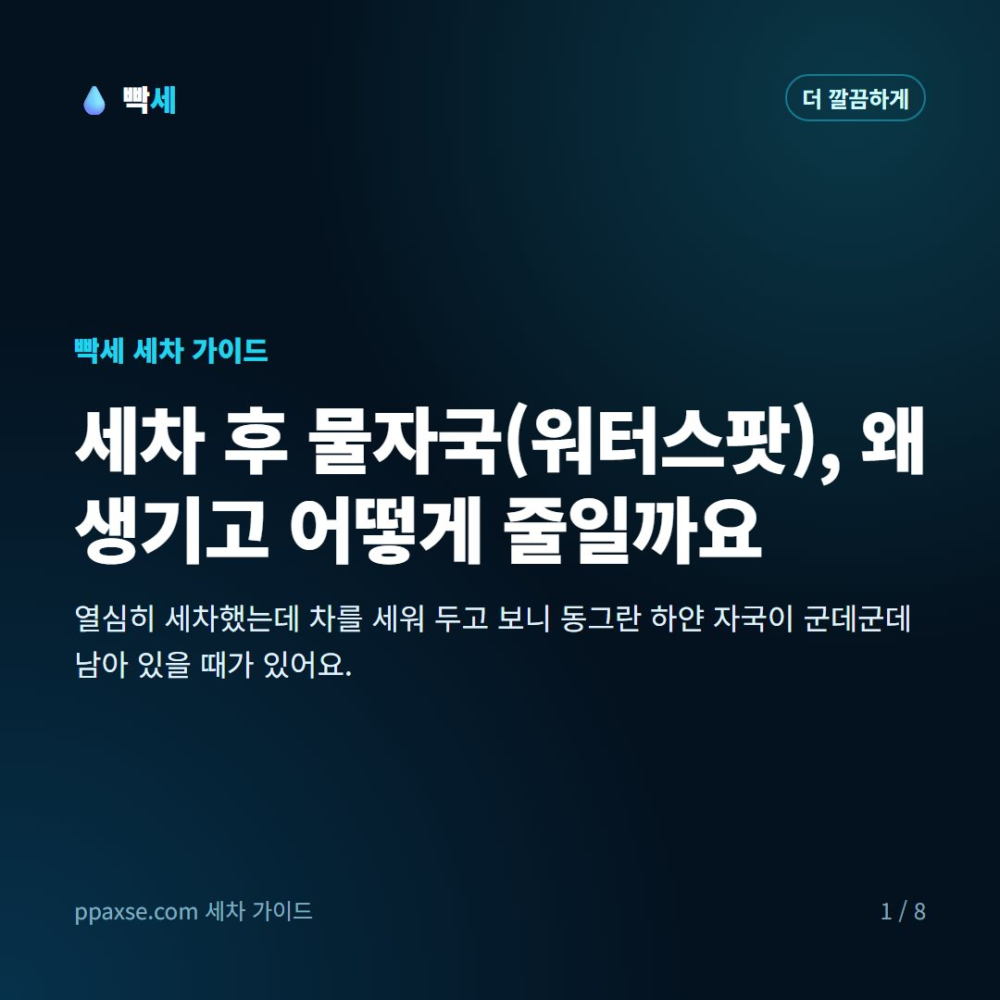
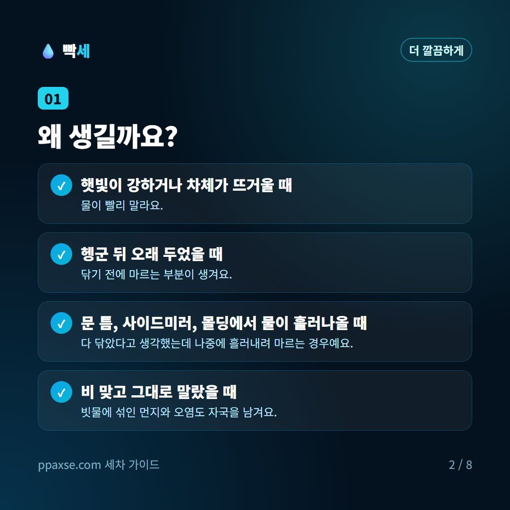
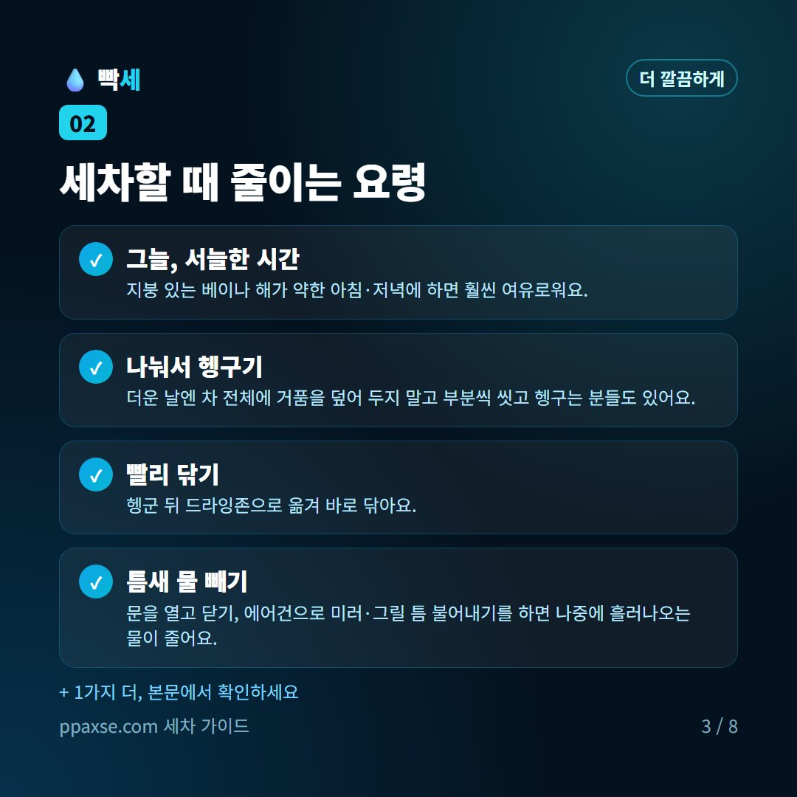
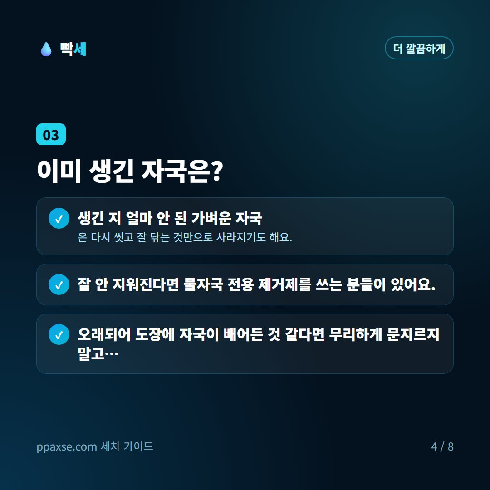
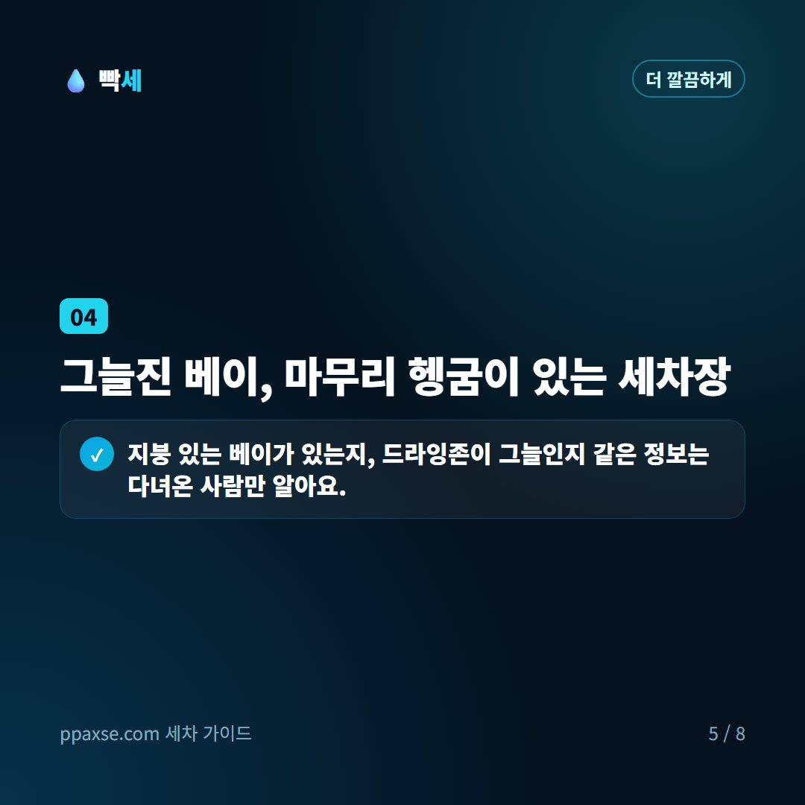

세차 후 물자국(워터스팟), 왜 생기고 어떻게 줄일까요
2026-11-21 · 빡세 세차 가이드
열심히 세차했는데 차를 세워 두고 보니 동그란 하얀 자국이 군데군데 남아 있을 때가 있어요. 흔히 물자국, 워터스팟이라고 불러요. 원리를 알면 꽤 많이 줄일 수 있어요.

왜 생길까요?

물에는 눈에 보이지 않는 미네랄(석회 성분 등)이 녹아 있어요. 물방울이 차 위에서 그대로 마르면 물은 날아가고 미네랄만 남아 동그란 자국이 돼요. 그래서 이런 때 잘 생겨요.
- 햇빛이 강하거나 차체가 뜨거울 때 — 물이 빨리 말라요.
- 헹군 뒤 오래 두었을 때 — 닦기 전에 마르는 부분이 생겨요.
- 문 틈, 사이드미러, 몰딩에서 물이 흘러나올 때 — 다 닦았다고 생각했는데 나중에 흘러내려 마르는 경우예요.
- 비 맞고 그대로 말랐을 때 — 빗물에 섞인 먼지와 오염도 자국을 남겨요.
세차할 때 줄이는 요령

- 그늘, 서늘한 시간 — 지붕 있는 베이나 해가 약한 아침·저녁에 하면 훨씬 여유로워요.
- 나눠서 헹구기 — 더운 날엔 차 전체에 거품을 덮어 두지 말고 부분씩 씻고 헹구는 분들도 있어요.
- 빨리 닦기 — 헹군 뒤 드라잉존으로 옮겨 바로 닦아요. 유리, 지붕, 보닛처럼 햇빛을 많이 받는 곳부터 하는 분들이 많아요.
- 틈새 물 빼기 — 문을 열고 닫기, 에어건으로 미러·그릴 틈 불어내기를 하면 나중에 흘러나오는 물이 줄어요.
- 마무리 헹굼 버튼 — 일부 세차장에는 자국이 덜 남도록 처리한 물로 헹구는 기능이 있어요. 있다면 마지막에 써 보세요.
💡 드라잉 타월이 물을 잘 못 먹으면 물기가 남아 자국이 되기 쉬워요. 타월 관리법은 곧 따로 정리할게요.
이미 생긴 자국은?

- 생긴 지 얼마 안 된 가벼운 자국은 다시 씻고 잘 닦는 것만으로 사라지기도 해요.
- 잘 안 지워진다면 물자국 전용 제거제를 쓰는 분들이 있어요. 제품 안내에 따라 쓰고, 햇빛 아래나 뜨거운 차체에서는 쓰지 않는 게 좋아요.
- 오래되어 도장에 자국이 배어든 것 같다면 무리하게 문지르지 말고 전문점에 상담해 보세요.
💡 무광 도장 차량은 제거제나 연마가 질감을 바꿀 수 있어요. 무광 도장 차량 세차 방법을 먼저 확인해 주세요.
그늘진 베이, 마무리 헹굼이 있는 세차장

지붕 있는 베이가 있는지, 드라잉존이 그늘인지 같은 정보는 다녀온 사람만 알아요. 빡세 지도에서는 이런 시설 정보를 이용자들이 함께 채워가고 있어요. 다녀온 세차장 이야기를 한마디로 남겨 주세요. 지역별 목록은 지역별 세차장 모음에서 볼 수 있어요.
🗺️ 우리 동네 세차장, 지도에서 한눈에 보세요
☀️ 오늘 세차하기 좋은 날일까요?
날씨 보고 세차할 날 고르기10일 달력 보기 ›
셀프세차·노터치·손세차를 종류별로 골라 보고, 폼건·온수·하부세차 같은 시설 정보도 확인할 수 있어요.
🗺️ 세차장 지도 열기✏️ 자주 가는 세차장에 한마디 남기기🎁 한마디를 남기면 가입 없이도 매주 기프티콘 추첨에 응모돼요.